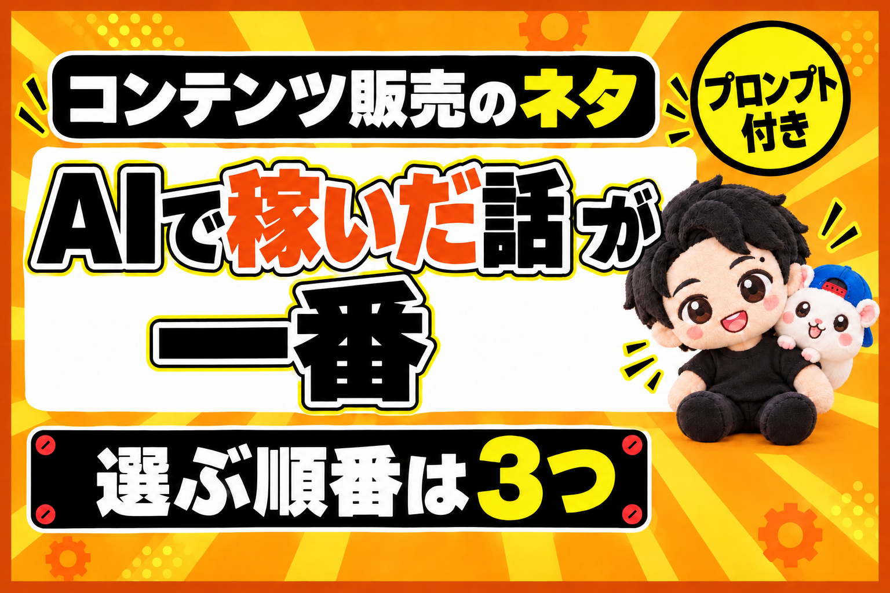

結論から書きます。
コンテンツ販売のネタは、「AIを使って、これで稼げました」がいちばんです。
でも、稼げていなくても大丈夫です。
人から「うらやましい」と思われるAIの成果なら、それもネタになります。
有料のコンテンツを売りたい。
発信して稼ぎたい。
でも、ネタがない。
そう思っている人は、けっこう多いと思います。
この記事では、ネタの選ぶ順番を3つにまとめました。
最後に、自分のネタを探すAIへの頼み方も付けています。
売れているのは、ほとんど「AI×◯◯」
まず、いま何が売れているかです。
Brain(教材の販売サイト)の売れ筋を見ると、すぐわかります。
人気順の上位100件のうち、AIが中心のものが73件でした(2026年10月9日に、ぼくが数えた数です)。
(Brainの人気の記事。20件中19件がAIを使う教材(2026年10月13日))
例えば、こんなものばかりです。
- AIで動画編集をしてみた
- AIで動画編集ができるツール
- AIで、いい感じのサムネイルが作れるスキル
- AIでLINEスタンプを作る
ここで、あえて逆らう必要はまったくありません。
AIと関係のない教材を、わざわざ売らなくていいんです。
お客さんが欲しがっている商品を、そのまま出す。
これがとても大事です。
選ぶ順番は3つ
(選ぶ順番は3つ。うらやましい成果→昔からの副業×AI→稼いだ実績→教材)
教材を買う人の多くは、稼ぐ方法を知りたい人です。
副業をしたい。
小さく商売をしたい。
会社をやめたい。
ほとんどが、そういうニーズです。
だから、ネタはこの順番で選びます。
- AIで稼いだ実績
- 昔からある人気の副業を、AIで回す
- 稼げていなくても、うらやましがられるAIの成果
① AIで稼いだ実績 → いちばん強い
いちばんいいのは、「AIを使って、こうやったら稼げました」です。
稼いで、その実績と一緒に、やり方を教材にします。
例えば、LINEスタンプなら。
AIでLINEスタンプを作りました。
これだけ売れて、1か月で5万円の利益が出ました。
そこまでにやったことを、教材にしていきます。
そのやり方すら、いまはネットに出ています。
AIに相談しながら進めれば、できます。
② 昔からある人気の副業を、AIで回す
少しだけ、自己紹介をさせてください。
ぼくは、eBay(海外向けのメルカリのようなサイト)で、日本の商品を売っています。
こういう、昔からある人気の副業や小さな商売があります。
昔からあるものは、ノウハウがYouTubeなどにあふれています。
それをAIに読み込ませて、AIを使って回すのもありです。
ただし、大事なのはAIとの相性です。
例えば、八百屋さん。
八百屋をAIでやるのは、手伝いはできても、本質的にはむずかしいですよね。
そうではなくて、パソコンで完結する仕事がいちばんです。
ほとんどがパソコンでできる副業なら、AIとの相性は自然と高くなります。
いまは、AIが作業までやってくれるからです。
例えば、こんな昔からある仕事です。
- LP(申し込みページ)の作成
- ホームページの作成
- 月額で使うツールの作成
- アプリの開発
まずはAIで作ってみる。
できれば、売れた実績をつける。
「こうやったら、これだけのもうけになりました」を出して、その過程を教材にする。
ネタとしては、これがいちばんです。
③ 稼げていなくても、うらやましがられるAIの成果
とはいえ、稼ぐところまではむずかしい場合もあると思います。
そのときは、AIを使ってうまくいったことをネタにします。
条件は1つです。
人から見て、うらやましい。
すごいと思われる。
「自分もやってみたい」と思われる。
そういうものでなければいけません。
だから選ぶときは、自分が将来売るお客さんの目で見ます。
「これ、やってみたいかな?」と。
稼ぐ系のネタは、もともとうらやましがられるので、ここはクリアしています。
そうでないなら、例えばこんなものです。
- AIで、LINEスタンプを大量に作れました
- ブログを1本書くだけで、Xの投稿・Threadsの投稿・YouTubeのショート・Instagramのリール・TikTokの動画まで、一気に作れるツールを作りました
後のほうは、欲しい人がいますよね。
ショート動画の出来がよければ、買いたい人はいます。
稼ぐところに結びついていなくても、これならOKです。
そして、それで教材が売れたら。
「これで稼げました」が、また次の教材になります。
③から始めても、①に戻ってこられます。
まねできる手順: AIにネタを探してもらう
自分のネタが思いつかないときは、AIにこう頼んでみてください。
ぼくがAIを使ってやったこと・やってみたいことを書きます。
(ここに、思いつくままに書き出す)
この中から、コンテンツ販売のネタになりそうなものを5つ選んでください。
それぞれに、次の3つをつけて、表にしてください。
・AIを使って稼いだ実績になるか(なる/なりそう/ならない)
・パソコンで完結するか(はい/いいえ)
・人から「うらやましい」「やってみたい」と思われるか(高い/ふつう/低い)
最後に、いちばん始めやすいものを1つ選んで、理由を3行で書いてください。AIでどこまで自動にするかは、各サービスの規約を確かめたうえで、自己責任で決めてください。
まとめ
コンテンツ販売のネタは、この3つの順番で選びます。
- AIで稼いだ実績
- 昔からある人気の副業を、AIで回す(パソコンで完結するもの)
- 稼げていなくても、うらやましがられるAIの成果
売れ筋の「AI×◯◯」に、逆らわなくていい。
お客さんが欲しいものを、そのまま出す。
売れたら、それがまた次のネタになります。
あなたの「AI×◯◯」は、どれから始めますか?
▼AIで稼いで、教材にして売るまでを、ぜんぶ1冊にまとめてあります
フォロワーゼロから利益95.8万円まで、54日間の数字と失敗と手順を、全部書いた教科書です。
録音から記事、教材、販売ページ、売れたあとの台帳まで。うちで毎日使っているツールも付録に入れました。
『noteから始める「AI×◯◯」コンテンツ販売の教科書｜フォロワーゼロから利益95.8万円』


販売価格は3部売れるごとに2,000円ずつ値上がりします（上限あり）。内容・最新価格は販売ページをご確認ください。